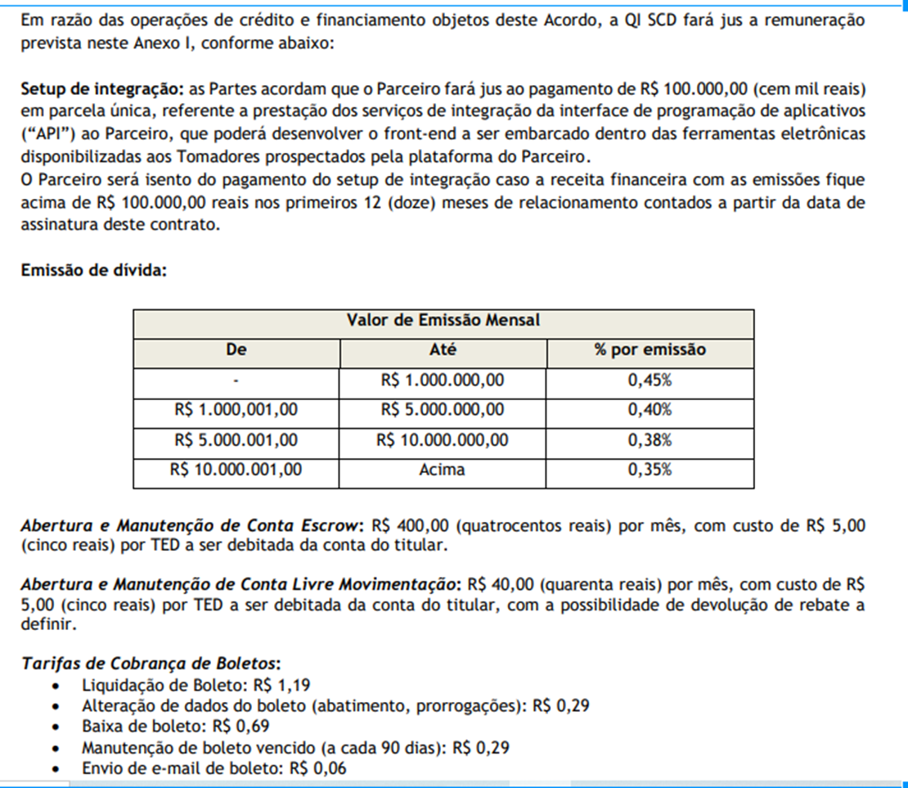

Created by Alessandro Oliveira (Unlicensed), last modified on Jun 03, 2022
Owner: Daniella Souza
A TAC A55 é parte das taxas que compõem um contrato da a55, juntamente com a taxa CETIP e o custo por bancarizador.
Nos relatórios da a55, o cálculo da TAC A55 parte do cálculo da TAC Total (TAC Total) e do custo por bancarizador, conforme expressão abaixo:
A fórmula para o cômputo do custo por bancarizador varia conforme o bancarizador do contrato em questão. Dado um contrato qualquer, o custo por bancarizador em cada contrato é dado como:
MoneyPlus
QI Tech
Montante Emissor <= R$1000000
Montante Emissor <= R$5000000
Montante Emissor <= R$10000000
Montante Emissor > R$10000000
Adicionalmente, exclusivamente para o bancarizador QI Tech, é cobrado uma taxa de 5% sobre a TAC A55. Ou seja, para um contrato bancarizado pela QI Tech, o cômputo final da TAC A55 é:
TAC A55 = 0.95(TAC Total - Custo QI Tech)
Socinal
Montante Emissor <= R$2500000:
Montante Emissor entre R$2500000.01 e R$5000000:
Montante Emissor entre R$5000000.01 e R$7500000:
O montante emissor é definido como a soma do valor bruto de todos os contratos emitidos por aquele emissor. A depender do valor total emitido no mês anterior, o cálculo da taxa cobrada no mês seguinte muda, conforme relações acima.
KPI disponível em: https://metabase.a55.tech/question/2384-a55-fee
 SQL
SQL
with faturamento_realizado as (
select
issuer_id
, issuer.name as issuer_name
, date_trunc('month', i.loan_date) as periodo
, sum(fee_a55 + "fee_CETIP" + fee_issuer)/100 as tac_total
, sum(iof)/100 as iof
, sum(i.gross_amount)/100 as amount_bruto
from asset.instrument i
left join asset.issuer
on 1=1
and issuer.id = i.issuer_id
where 1=1
[[and i.loan_date::date between {{dt_inicio}} and {{dt_fim}}]]
and i.id not in
(
select -- empresas que possuem renegociação
related.destination_instrument
from asset.instrument_related related
)
group by
issuer_id
, issuer.name
, date_trunc('month', i.loan_date)
)
, custo_por_issuer as (
select
issuer_id
, issuer_name
, amount_bruto
, tac_total
, case
when fr.issuer_name = 'MoneyPlus'
then (amount_bruto - tac_total - iof)* 0.0035
when fr.issuer_name = 'QI Tech'
and amount_bruto <= 1000000
then (amount_bruto*0.0045)
when fr.issuer_name = 'QI Tech'
and amount_bruto <= 5000000
then (amount_bruto*0.0040)
when fr.issuer_name = 'QI Tech'
and amount_bruto <= 10000000
then (amount_bruto*0.0038)
when fr.issuer_name = 'QI Tech'
and amount_bruto >= 10000000
then (amount_bruto*0.0035)
when fr.issuer_name = 'Socinal'
and amount_bruto <= 2500000
then (((tac_total - (amount_bruto*0.0080))*0.0965) + (amount_bruto*0.0080)) -- tac total menos o custo do bancarizador menos o imposto que é pago pro governo
when fr.issuer_name = 'Socinal'
and amount_bruto between 2500000.01 and 5000000
then (((tac_total - (amount_bruto*0.0070))*0.0965) + (amount_bruto*0.0070))
when fr.issuer_name = 'Socinal'
and amount_bruto between 5000000.01 and 7500000
then (((tac_total - (amount_bruto*0.0060))*0.0965) + (amount_bruto*0.0060))
end as custo_taxa -- MoneyPlus sempre 0.35 no valor LIQUIDO , enquanto que money plus e Socinal é no valor bruto e o custo ISS é só QI Tech
from faturamento_realizado fr
)
, custo_iss as (
select
issuer_name
, amount_bruto
, tac_total
, custo_taxa
, case when issuer_name = 'QI Tech' then (tac_total - custo_taxa) * 0.05 end as custo_iss -- Custo ISS Só Para QI Tech
, sum(
case when tac_total > 0
then (tac_total - custo_taxa)
else 0
end) as tac_a55
from custo_por_issuer
group by
issuer_name
, amount_bruto
, tac_total
, custo_taxa
)
select sum(tac_a55) - sum(custo_iss)
from custo_iss
{kind=link}
{kind=link}
{kind=link}
{kind=link}